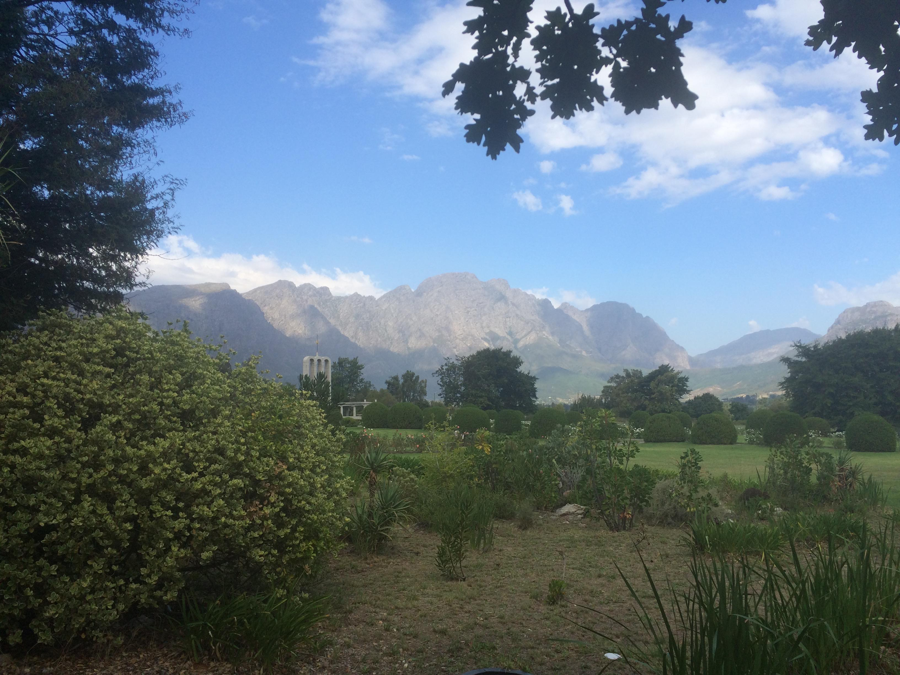
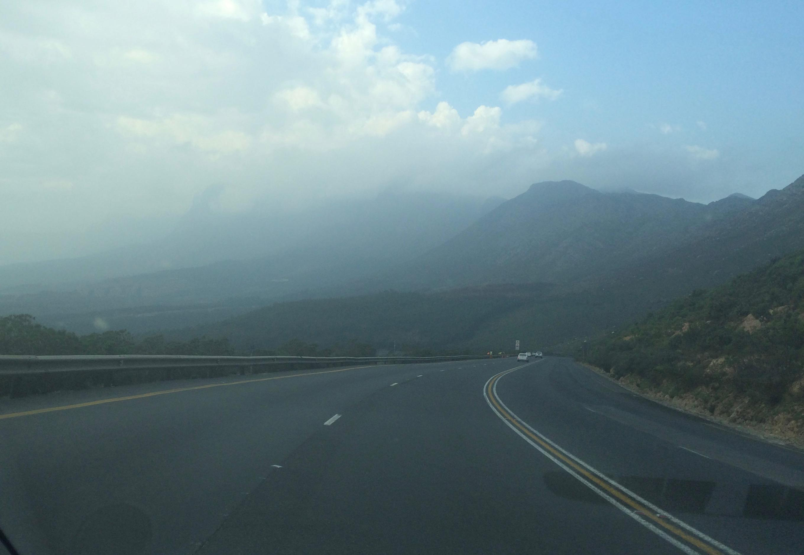
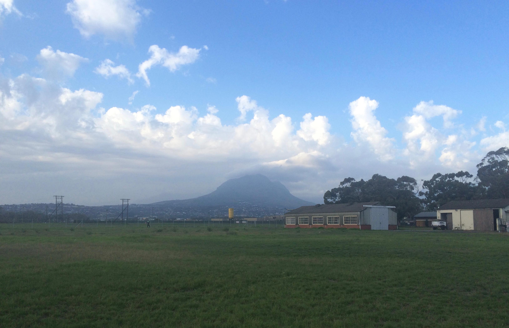

Tag 9 - Franschhoek
By Evita Bley
Heute wird im Kreis gefahren … Also jetzt nicht auf einer Autorennteststrecke, sondern wir fahren hier von Somerset West Richtung Stellenbosch. Nach Stellenbosch rechts ab und schon sind wir auf der „Weinroute“. Was das bedeutet erkennt man recht schnell, da jede Einfahrt links und rechts der Straße ein Schild hat, auf dem steht: „(hier Name des Weinguts einsetzen)“. An jeder dieser Stellen könnte man anhalten, eine Weinprobe machen und zum nächsten Haus weiterfahren. Das werden wir dann aber erst am Samstag zusammen mit Jeanines Familie machen.

Ich glaube ich brauche nicht zu sagen, dass die Aussicht hinter jeder Kurve wieder atemberaubend ist und das wird heute auch die ganze Tour lang so bleiben.
Heute haben wir ein anderes Ziel, Franschhoek. Franschhoek ist eine von Hugenotten gegründete Stadt. Irgendwann ganz früher sind hier mal die Franzosen hergekommen und dachten sich, Mensch guck, hier ist es schön, lass uns mal hier bleiben und vor uns hin herrschen und die Eingeborenen unterdrücken … So oder so ähnlich wird es gewesen sein. Mittlerweile ist Franschhoek ein wirklich schönes kleines Städtchen, wo die betuchteren Herrschaften Urlaub machen und es sich gut gehen lassen.

Es gibt hier ein Monument, welches die Hugenotten gebaut haben. Und ein kleines Museum und einen wirklich seeehr alten Friedhof. Die Anlage ist schön gemacht und man kann einen Moment entspannen und die Aussicht und das Grün genießen.
Wir wollten eigentlich gern den 3,5 km Wanderweg des Mont Rochelle finden. Leider sind entweder wir zu doof oder die Beschilderung ist schlecht. Das mag ich nicht beurteilen. Jedenfalls da wo das Navi uns hinführt ist kein Wanderweg, sondern ein Privatgrundstück mit Einlasskontrolle. Auch der gute Mann weiß nicht, wo wir hin wollen und so entscheiden wir uns gegen eine Wanderung und für Bergsteigen mit dem Auto.
Wir fahren über den Franschhoek Pass. Die Straßen sind hier extrem gut ausgebaut. Da könnten sich Serpentinenstraßen über die Alpen mal was abschauen. Selbst mit Linksverkehr und neuem Auto fühle ich mich sicher und habe Spaß beim Fahren. Martin ist begeistert von jedem neuen Berg, den er sieht und macht die ganze Zeit fleißig Fotos. Dann kann ich später auch sehen, wo wir waren :D Das ist natürlich Quatsch, auch ich genieße es, durch diese wunderschöne Landschaft zu fahren und sie zu sehen. So mag ich das.
Uns verwirrt sehr, dass hinter jeder größeren Kurve eine neue Landschaft ist. Das heißt mal gibt es große weiße Steine, mal gibt es Kiefernwälder, Apfelbaumplantagen, Steppe … irre. Schon bald kommen wir zu einem eigentlich sehr großen See, Waterskloof. Dieser See ist im Moment unfassbar leer. Die Dürre des letzten Jahres hat diesen See fast komplett ausgetrocknet und es ist einer der größten Seen, die man hier finden kann eigentlich.
Wir fahren über eine Brücke über den See, die Brücke steht kaum unter Wasser und ist somit komplett sichtbar und ziemlich beeindruckend. Und plötzlich sind da ein paar Baboons (Paviane) mitten auf der Straße und am Straßenrand. Eine kleine Pavianfamilie, ei wie putzig! Martin schafft es sogar, schnell ein paar Aufnahmen zu machen. Jetzt weiß ich auch wieder, warum ich, wenn hier 100 km/h als Höchstwert an der Straße steht, nur 70 km/h fahre, man würde so viel verpassen, sogar die wildlebenden Paviane.
Der nächste Ort den wir anpeilen ist Grabouw. Vorher müssen wir aber noch über einen anderen Pass, was wieder prächtige Ausblicke bietet. Grabouw an sich ist eher unschön. Wir versuchen, einen Ort zu finden, um eine Kleinigkeit zu essen, aber es gelingt uns nicht. Also entscheiden wir, dass wir auf direktem Wege wieder nach Somerset West zurückfahren.

Das heißt wir fahren auf die N2, was so die Hauptautobahn hier ist, also die größte Straße, die sie hier haben. In Deutschland wäre das vermutlich eine gut ausgebaute Bundesstraße mit meistens zwei Spuren. Hier ist es eine Straße, die auch wieder über Berge führt und man muss höllisch aufpassen, dass man nicht einen schleichenden LKW vor sich oder ein rasendes Auto hinter/neben sich hat und gleichzeitig sollte man schauen, dass man nicht links den unheimlich steilen Abhang runterfährt … Hier hat man einen herrlichen Blick über Gordon’s Bay und das Meer und überhaupt.

Wieder zu Hause angekommen ein bisschen entspannen und nochmal einmal mit Jeanine zusammen Richtung Cheetah-Farm laufen und am Markt vorbei und ganz hinten kurz vor den Dünen (hinter denen natürlich direkt das Meer ist, nur darf man da nicht rauf) ist ein rotes Backsteinhaus und drauf steht „Triggerfish“ und drin ist eine Brauerei.
Jeder von uns bekommt vier selbstgewählte Bierproben und so testen wir uns durch das Angebot und sind mal mehr mal weniger begeistert. Aber alles in allem ein schöner Platz, um abends noch ein Bier zu trinken und sich zu unterhalten. Wieder so ein Ort, den man vermutlich nur sieht, wenn man jemanden hat, der hier wohnt und die Gegend schon ein paar Jahre erkundet hat. Danke Jeanine :)
Wieder zu Hause geht es an die Kartoffelpuffer. Alles wird vorbereitet und jeder hilft mit und jeder brät mit und es ist ein spaßiger Abend mit lecker „deutschem Essen“.
Es fängt an zu regnen … Regen, so richtig mit Wasser und Wolken und Wind! Na wir werden sehen, wie das Wetter morgen ist. Noch haben wir keine Pläne, aber ich bin sicher, dass wir wieder irgendetwas neues erleben, wie jeden Tag :)